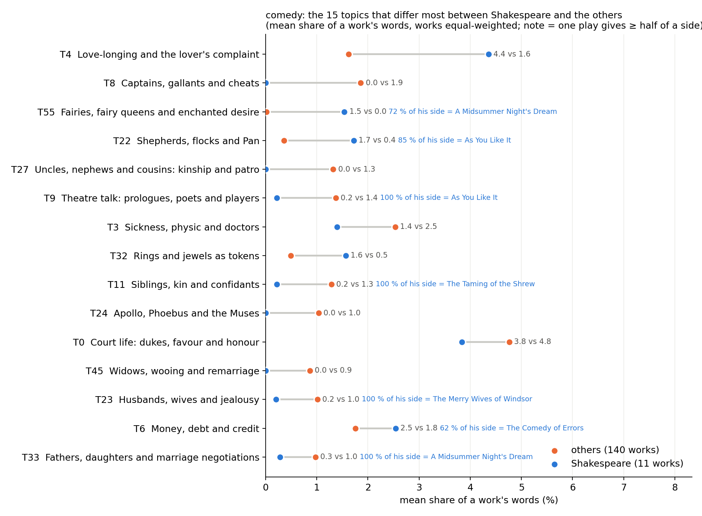
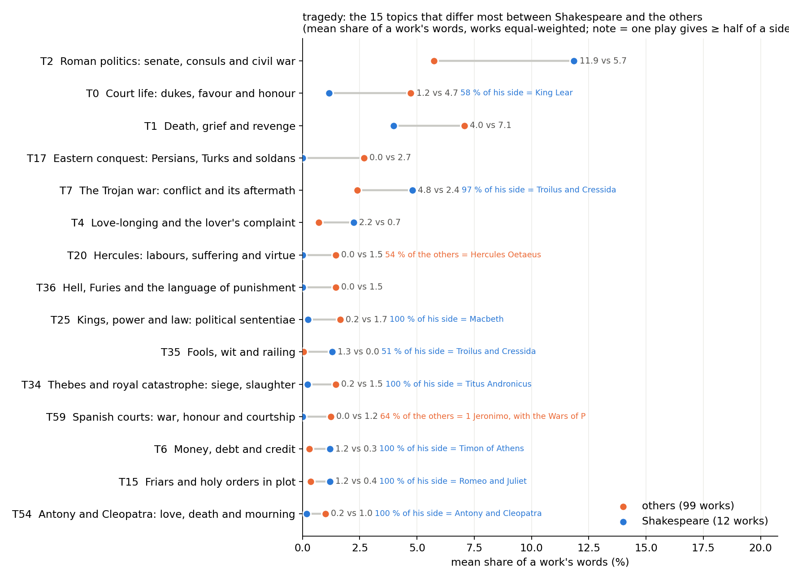
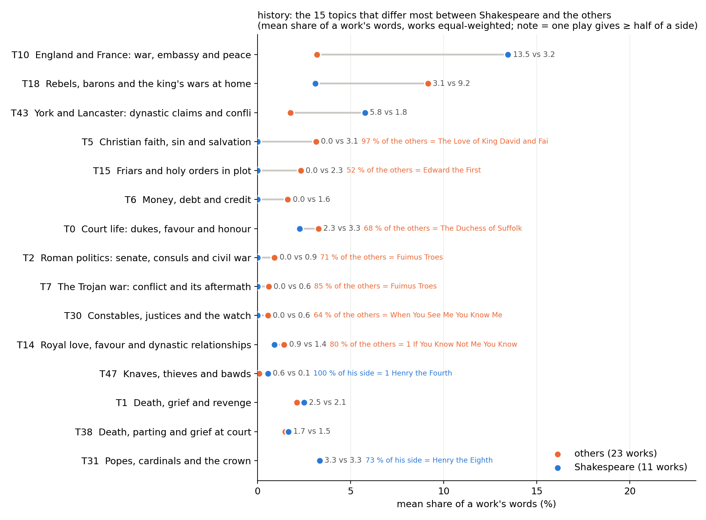
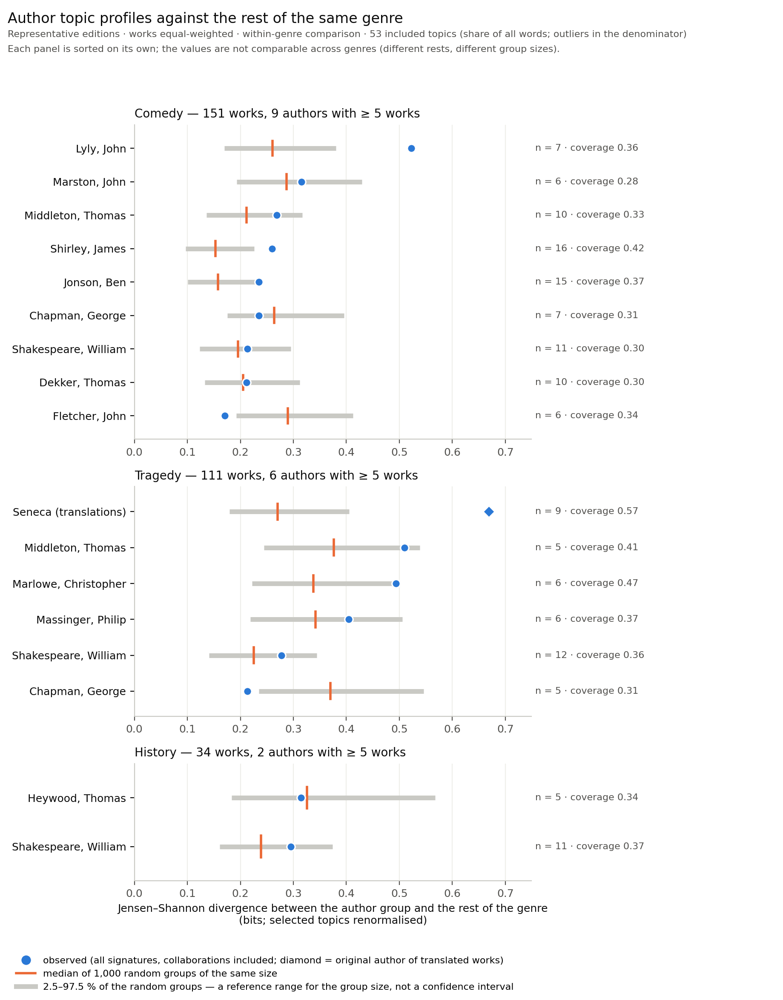
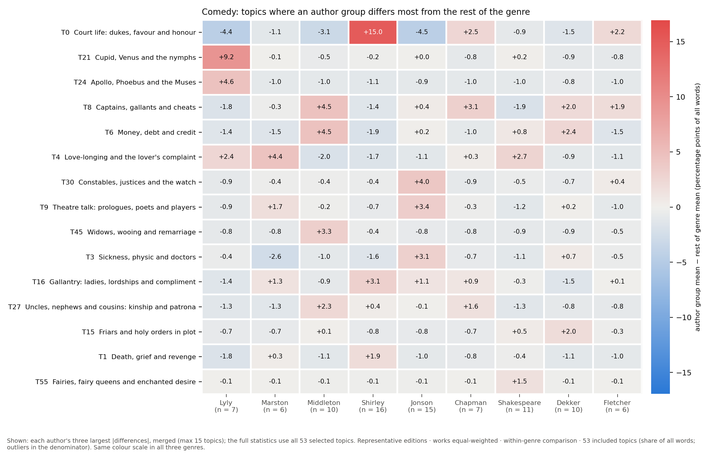
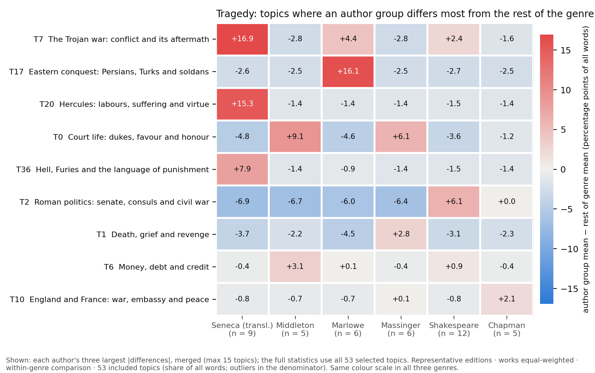
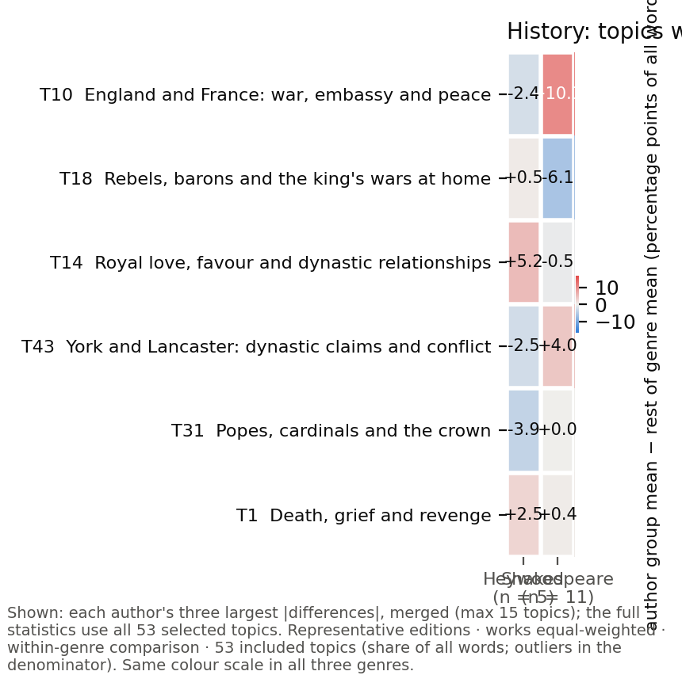

What is compared here is the distribution of a fixed set of topics — the share of a work's words that falls in each of the included clusters — for one author's works against the rest of the same genre. It is not a measure of literary value, of an author's whole style, or of originality; it is a description of where the topic profiles sit relative to each other, with the works behind every difference kept in view.
Run runs_Qwen_Qwen3-Embedding-0.6B_masked_hdb10, seed 42 · 53 included topics · result files: shakespeare (2026-09-26), author_by_genre (2026-09-29) · page built 2026-09-29. Measure: one representative edition per work, works equal-weighted, topic shares as a share of ALL words of a work (outliers and non-included topics stay in the denominator).
Sections: Overview · A. Shakespeare within genre · B. Authors within genre · C. Which works account for the difference? · Details and downloads
Each pair of bars compares the average share of a topic in Shakespeare's plays and in other plays of the same genre.
Average share of a play's words (%)
Representative editions; plays weighted equally. Percentages include all words in the denominator, including text outside the selected topics. Only the ten most prominent topics are shown: those with the highest simple average of the two groups' mean shares, in that order on both sides; the axis is scaled to the genre shown. n/N plays = plays of the group with at least one chunk assigned to the topic; a play without one is not thereby without the subject, and 0 means that no chunk of any play in the group was assigned to the topic. Where one play supplies more than half of a group's total for a topic, that play is named. Shakespeare's side includes collaborative plays carrying his signature. Click a row for the exact values and the works behind them; Methods has the measure.
Jensen–Shannon divergence between each playwright's plays and the other plays of the same genre, on the 53 selected topics. A dot further to the right means a more different distribution of the selected topics — not greater literary originality or quality.
Jensen–Shannon divergence (bits; the same axis for the three genres)
Each playwright is compared with the remaining plays in the same genre. Plays are weighted equally; only authors represented by at least five plays are shown, collaborative plays included. The grey line shows results from randomly selected groups containing the same number of plays (1,000 draws, 2.5–97.5 %). It is a reference range, not a confidence interval, and it does not control for date, company or other factors; small groups can produce large divergences by chance, and the range helps to judge this. A dot inside the line does not mean the two groups are the same, and a dot outside it does not mean greater originality or value. Unlike the chart above, which uses all words of a play as the denominator, this divergence compares the relative distribution within the 53 selected topics only. Values are not a ranking across genres. Click a playwright to see which topics and which plays account for the difference (section C).
For each of the three genres with enough works, the mean share of every included topic in Shakespeare's works is set beside the mean in all other works of that genre. A difference in mean share describes the two profiles; it says nothing about literary value, and a difference carried by one play is a fact about that play (the tables name the play that supplies most of a side).
Shakespeare's side: every comedy work whose author field names him (collaborations and adaptations included): A Midsummer Night's Dream, As You Like It, Love's Labor's Lost, Much Ado About Nothing, The Comedy of Errors, The Merchant of Venice (The Jew of Venice), The Merry Wives of Windsor, The Taming of the Shrew, The Tempest, The Two Gentlemen of Verona, Twelfth Night, or What You Will. The other side is every other comedy work of the corpus. Signature rule as recorded in the author field of the corpus; no attribution research.

Largest differences in mean topic share; the annotation names a play that supplies half or more of one side's total. Click to enlarge.
| topic | Shakespeare mean % | others mean % | diff. (pp) | works with topic (S) | (others) | top Shakespeare play (share of his side) | top other play — author (share of that side) |
|---|---|---|---|---|---|---|---|
| T4 Love-longing and the lover's complaint | 4.36 | 1.62 | +2.73 | 5/11 | 41/140 | A Midsummer Night's Dream (32 %) | The Fair Maid of the Exchange — Anonymous (7 %) |
| T8 Captains, gallants and cheats | 0.00 | 1.86 | -1.86 | 0/11 | 27/140 | The Puritan, or The Widow of Watli — Middleton, Thomas (11 %) | |
| T55 Fairies, fairy queens and enchanted desire | 1.54 | 0.01 | +1.52 | 2/11 | 1/140 | A Midsummer Night's Dream (72 %) | The Jealous Lovers — Randolph, Thomas (100 %) |
| T22 Shepherds, flocks and Pan | 1.72 | 0.36 | +1.36 | 2/11 | 8/140 | As You Like It (85 %) | The Maid's Metamorphosis — Anonymous (29 %) |
| T27 Uncles, nephews and cousins: kinship and pat | 0.00 | 1.32 | -1.32 | 0/11 | 37/140 | The City Match — Mayne, Jasper (11 %) | |
| T9 Theatre talk: prologues, poets and players | 0.22 | 1.37 | -1.15 | 1/11 | 41/140 | As You Like It (100 %) | The Antipodes — Brome, Richard (8 %) |
| T3 Sickness, physic and doctors | 1.39 | 2.54 | -1.14 | 3/11 | 40/140 | The Merry Wives of Windsor (46 %) | The Family of Love — Barry, Lording (13 %) |
| T32 Rings and jewels as tokens | 1.57 | 0.49 | +1.08 | 3/11 | 17/140 | The Merchant of Venice (The Jew of (45 %) | The Two Merry Milkmaids, or The Be — Cumber, John (22 %) |
| T11 Siblings, kin and confidants | 0.22 | 1.29 | -1.07 | 1/11 | 39/140 | The Taming of the Shrew (100 %) | Greene's Tu Quoque, or The City Ga — Cooke, John (9 %) |
| T24 Apollo, Phoebus and the Muses | 0.00 | 1.04 | -1.04 | 0/11 | 12/140 | Apollo Shroving — Hawkins, William (44 %) | |
| T0 Court life: dukes, favour and honour | 3.84 | 4.76 | -0.92 | 6/11 | 41/140 | Much Ado About Nothing (23 %) | The Opportunity — Shirley, James (13 %) |
| T45 Widows, wooing and remarriage | 0.00 | 0.86 | -0.86 | 0/11 | 14/140 | A Trick to Catch the Old One — Middleton, Thomas (26 %) |
| topic | Shakespeare mean % | others mean % | diff. (pp) | works with topic (S) | (others) | top Shakespeare play (share of his side) | top other play — author (share of that side) |
|---|---|---|---|---|---|---|---|
| T4 Love-longing and the lover's complaint | 4.36 | 1.62 | +2.73 | 5/11 | 41/140 | A Midsummer Night's Dream (32 %) | The Fair Maid of the Exchange — Anonymous (7 %) |
| T8 Captains, gallants and cheats | 0.00 | 1.86 | -1.86 | 0/11 | 27/140 | The Puritan, or The Widow of Watli — Middleton, Thomas (11 %) | |
| T55 Fairies, fairy queens and enchanted desire | 1.54 | 0.01 | +1.52 | 2/11 | 1/140 | A Midsummer Night's Dream (72 %) | The Jealous Lovers — Randolph, Thomas (100 %) |
| T22 Shepherds, flocks and Pan | 1.72 | 0.36 | +1.36 | 2/11 | 8/140 | As You Like It (85 %) | The Maid's Metamorphosis — Anonymous (29 %) |
| T27 Uncles, nephews and cousins: kinship and pat | 0.00 | 1.32 | -1.32 | 0/11 | 37/140 | The City Match — Mayne, Jasper (11 %) | |
| T9 Theatre talk: prologues, poets and players | 0.22 | 1.37 | -1.15 | 1/11 | 41/140 | As You Like It (100 %) | The Antipodes — Brome, Richard (8 %) |
| T3 Sickness, physic and doctors | 1.39 | 2.54 | -1.14 | 3/11 | 40/140 | The Merry Wives of Windsor (46 %) | The Family of Love — Barry, Lording (13 %) |
| T32 Rings and jewels as tokens | 1.57 | 0.49 | +1.08 | 3/11 | 17/140 | The Merchant of Venice (The Jew of (45 %) | The Two Merry Milkmaids, or The Be — Cumber, John (22 %) |
| T11 Siblings, kin and confidants | 0.22 | 1.29 | -1.07 | 1/11 | 39/140 | The Taming of the Shrew (100 %) | Greene's Tu Quoque, or The City Ga — Cooke, John (9 %) |
| T24 Apollo, Phoebus and the Muses | 0.00 | 1.04 | -1.04 | 0/11 | 12/140 | Apollo Shroving — Hawkins, William (44 %) | |
| T0 Court life: dukes, favour and honour | 3.84 | 4.76 | -0.92 | 6/11 | 41/140 | Much Ado About Nothing (23 %) | The Opportunity — Shirley, James (13 %) |
| T45 Widows, wooing and remarriage | 0.00 | 0.86 | -0.86 | 0/11 | 14/140 | A Trick to Catch the Old One — Middleton, Thomas (26 %) | |
| T23 Husbands, wives and jealousy | 0.20 | 1.01 | -0.81 | 1/11 | 27/140 | The Merry Wives of Windsor (100 %) | All Fools — Chapman, George (11 %) |
| T6 Money, debt and credit | 2.54 | 1.75 | +0.79 | 2/11 | 44/140 | The Comedy of Errors (62 %) | The Knave in Grain, New Vamped — D., J. (7 %) |
| T33 Fathers, daughters and marriage negotiations | 0.28 | 0.97 | -0.69 | 1/11 | 28/140 | A Midsummer Night's Dream (100 %) | Andria (The Woman from Andros) — Terence (Publius Teren (31 %) |
| T50 Fleets, armies and generals: war by sea and | 0.57 | 0.05 | +0.52 | 1/11 | 2/140 | The Tempest (100 %) | Antonio and Mellida — Marston, John (50 %) |
| T15 Friars and holy orders in plot | 1.16 | 0.66 | +0.50 | 2/11 | 7/140 | Much Ado About Nothing (75 %) | Friar Bacon and Friar Bongay — Greene, Robert (34 %) |
| T30 Constables, justices and the watch | 0.42 | 0.89 | -0.47 | 1/11 | 13/140 | Much Ado About Nothing (100 %) | A Tale of a Tub — Jonson, Ben (52 %) |
| T14 Royal love, favour and dynastic relationship | 0.68 | 0.25 | +0.43 | 3/11 | 9/140 | Love's Labor's Lost (34 %) | The Royal Master — Shirley, James (24 %) |
| T44 Drinking: wine, ale and taverns | 0.23 | 0.64 | -0.41 | 1/11 | 22/140 | The Taming of the Shrew (100 %) | Bartholomew Fair — Jonson, Ben (16 %) |
| T46 Swords, quarrels and valour | 0.00 | 0.40 | -0.40 | 0/11 | 17/140 | Every Man in His Humor — Jonson, Ben (17 %) | |
| T1 Death, grief and revenge | 1.39 | 1.78 | -0.39 | 3/11 | 42/140 | The Merchant of Venice (The Jew of (50 %) | The Wedding — Shirley, James (9 %) |
| T26 Devils, hell and fiends | 0.54 | 0.91 | -0.37 | 2/11 | 20/140 | The Comedy of Errors (56 %) | The Devil Is an Ass — Jonson, Ben (19 %) |
| T49 Wooing a mistress: suitors, go-betweens and | 0.22 | 0.59 | -0.37 | 1/11 | 22/140 | The Taming of the Shrew (100 %) | The Witty Fair One — Shirley, James (11 %) |
| T16 Gallantry: ladies, lordships and compliment | 1.14 | 1.39 | -0.26 | 3/11 | 37/140 | Twelfth Night, or What You Will (41 %) | The Lady of Pleasure — Shirley, James (16 %) |
| T62 The courtier as a type: fashion, affectation | 0.00 | 0.26 | -0.26 | 0/11 | 8/140 | Cynthia's Revels, or The Fountain — Jonson, Ben (22 %) | |
| T7 The Trojan war: conflict and its aftermath | 0.47 | 0.22 | +0.25 | 2/11 | 4/140 | Love's Labor's Lost (53 %) | Thersites — Udall, Nicholas (73 %) |
| T21 Cupid, Venus and the nymphs | 1.03 | 0.79 | +0.24 | 3/11 | 15/140 | A Midsummer Night's Dream (53 %) | Gallathea — Lyly, John (37 %) |
| T35 Fools, wit and railing | 0.91 | 0.68 | +0.22 | 2/11 | 27/140 | Love's Labor's Lost (53 %) | Aristippus, or The Jovial Philosop — Randolph, Thomas (17 %) |
| T28 Marriage-making: weddings, brides and matche | 0.87 | 1.08 | -0.21 | 3/11 | 30/140 | The Taming of the Shrew (52 %) | Mother Bombie — Lyly, John (12 %) |
| T20 Hercules: labours, suffering and virtue | 0.00 | 0.20 | -0.20 | 0/11 | 5/140 | Thersites — Udall, Nicholas (50 %) | |
| T52 Prodigals, portions and poor kin | 0.61 | 0.40 | +0.20 | 1/11 | 12/140 | As You Like It (100 %) | A New Wonder, A Woman Never Vexed — Heywood, Thomas / Rowl (28 %) |
| T47 Knaves, thieves and bawds | 0.23 | 0.40 | -0.17 | 1/11 | 13/140 | The Taming of the Shrew (100 %) | 2 The Honest Whore (2 The Converte — Dekker, Thomas (26 %) |
| T54 Antony and Cleopatra: love, death and mourni | 0.21 | 0.06 | +0.16 | 1/11 | 2/140 | Much Ado About Nothing (100 %) | The Play of the Weather — Heywood, John (61 %) |
| T37 Riches, poverty and covetousness | 0.00 | 0.12 | -0.12 | 0/11 | 5/140 | Summer's Last Will and Testament — Nashe, Thomas (53 %) | |
| T56 Magic, spells and conjuring | 0.27 | 0.15 | +0.12 | 1/11 | 5/140 | The Tempest (100 %) | Fedele and Fortunia (Two Italian G — Pasqualigo, Luigi / Mu (34 %) |
| T5 Christian faith, sin and salvation | 0.26 | 0.16 | +0.09 | 1/11 | 7/140 | Love's Labor's Lost (100 %) | The Hog Hath Lost His Pearl — Tailor, Robert (25 %) |
| T12 Olympian gods: Jupiter, Juno, Venus and Mars | 0.26 | 0.18 | +0.08 | 1/11 | 3/140 | The Tempest (100 %) | The Woman in the Moon — Lyly, John (46 %) |
| T17 Eastern conquest: Persians, Turks and soldan | 0.00 | 0.08 | -0.08 | 0/11 | 3/140 | Hans Beer-Pot (See Me and See Me N — Belchier, Dabridgcourt (34 %) | |
| T39 Profit, conscience and dishonest dealing | 0.00 | 0.08 | -0.08 | 0/11 | 3/140 | The Fleer — Sharpham, Edward (57 %) | |
| T2 Roman politics: senate, consuls and civil wa | 0.25 | 0.18 | +0.07 | 1/11 | 6/140 | Love's Labor's Lost (100 %) | Poetaster, or The Arraignment — Jonson, Ben (54 %) |
| T34 Thebes and royal catastrophe: siege, slaught | 0.00 | 0.06 | -0.06 | 0/11 | 1/140 | Campaspe (Alexander, Campaspe, and — Lyly, John (100 %) | |
| T25 Kings, power and law: political sententiae | 0.00 | 0.04 | -0.04 | 0/11 | 2/140 | Midas — Lyly, John (59 %) | |
| T40 Sin, guilt and violent loss within families | 0.21 | 0.24 | -0.04 | 1/11 | 9/140 | As You Like It (100 %) | 1 Promos and Cassandra — Whetstone, George (28 %) |
| T51 Parents and children: blessing, birthright a | 0.21 | 0.25 | -0.04 | 1/11 | 10/140 | The Merry Wives of Windsor (100 %) | Mother Bombie — Lyly, John (17 %) |
| T59 Spanish courts: war, honour and courtship | 0.00 | 0.04 | -0.04 | 0/11 | 1/140 | Rule a Wife and Have a Wife — Fletcher, John (100 %) | |
| T18 Rebels, barons and the king's wars at home | 0.00 | 0.03 | -0.03 | 0/11 | 1/140 | Look About You — Anonymous (100 %) | |
| T10 England and France: war, embassy and peace | 0.00 | 0.02 | -0.02 | 0/11 | 1/140 | The Shoemaker's Holiday, or The Ge — Dekker, Thomas (100 %) | |
| T36 Hell, Furies and the language of punishment | 0.00 | 0.02 | -0.02 | 0/11 | 1/140 | Apollo Shroving — Hawkins, William (100 %) | |
| T38 Death, parting and grief at court | 0.00 | 0.02 | -0.02 | 0/11 | 1/140 | Summer's Last Will and Testament — Nashe, Thomas (100 %) | |
| T31 Popes, cardinals and the crown | 0.00 | 0.01 | -0.01 | 0/11 | 1/140 | The Staple of News — Jonson, Ben (100 %) | |
| T43 York and Lancaster: dynastic claims and conf | 0.00 | 0.00 | +0.00 | 0/11 | 0/140 | ||
| T60 Imperial Rome: rulers, favour and political | 0.00 | 0.00 | +0.00 | 0/11 | 0/140 |
| variant | profile | n Shakespeare / others | JSD (bits) | random-label median | permutation p | size-matched median |
|---|---|---|---|---|---|---|
| attributed | conditional on the compared topics | 11 / 140 | 0.2129 | 0.196 | 0.3596 | 0.3325 |
| attributed | compared topics + the rest as one bin | 11 / 140 | 0.0696 | 0.0682 | 0.4625 | 0.1076 |
| sole | conditional on the compared topics | 11 / 140 | 0.2129 | 0.1927 | 0.3187 | 0.3391 |
| sole | compared topics + the rest as one bin | 11 / 140 | 0.0696 | 0.0678 | 0.4605 | 0.1122 |
JSD = Jensen–Shannon divergence between the two sides' mean profiles, log2, in bits (the divergence, not its square root); "conditional" renormalises the included topics, the second profile adds the remaining words as one bin. The random-label median is the median divergence when the same number of works is drawn at random from the genre (a reference for the group size, not a confidence interval); the permutation p is exploratory. "sole" keeps only works whose author field is Shakespeare alone; its side is smaller, so its divergence is not directly comparable with the attributed value. Shared inventory: 100.0 % of his words in compared topics fall in topics the others also use (others: 81.4 %).
Shakespeare's side: every tragedy work whose author field names him (collaborations and adaptations included): Antony and Cleopatra, Coriolanus, Hamlet, Prince of Denmark, Julius Caesar, King Lear, Macbeth collab., Master Arden of Faversham in Kent collab., Othello, the Moor of Venice, Romeo and Juliet, Timon of Athens collab., Titus Andronicus collab., Troilus and Cressida. The other side is every other tragedy work of the corpus. Signature rule as recorded in the author field of the corpus; no attribution research.

Largest differences in mean topic share; the annotation names a play that supplies half or more of one side's total. Click to enlarge.
| topic | Shakespeare mean % | others mean % | diff. (pp) | works with topic (S) | (others) | top Shakespeare play (share of his side) | top other play — author (share of that side) |
|---|---|---|---|---|---|---|---|
| T2 Roman politics: senate, consuls and civil wa | 11.86 | 5.73 | +6.13 | 4/12 | 23/99 | Coriolanus (45 %) | Catiline His Conspiracy — Jonson, Ben (15 %) |
| T0 Court life: dukes, favour and honour | 1.17 | 4.73 | -3.56 | 2/12 | 19/99 | King Lear (58 %) | The Revenger's Tragedy — Middleton, Thomas (14 %) |
| T1 Death, grief and revenge | 3.98 | 7.06 | -3.08 | 8/12 | 72/99 | Hamlet, Prince of Denmark (26 %) | Antonio's Revenge (2 Antonio and M — Marston, John (5 %) |
| T17 Eastern conquest: Persians, Turks and soldan | 0.00 | 2.69 | -2.69 | 0/12 | 12/99 | 1 Tamburlaine the Great — Marlowe, Christopher (26 %) | |
| T7 The Trojan war: conflict and its aftermath | 4.80 | 2.39 | +2.42 | 2/12 | 12/99 | Troilus and Cressida (97 %) | Troas (Seneca's Sixth Tragedy) — Heywood, Jasper / Sene (41 %) |
| T4 Love-longing and the lover's complaint | 2.24 | 0.71 | +1.54 | 4/12 | 20/99 | Romeo and Juliet (45 %) | The Wars of Cyrus, King of Persia — Anonymous (11 %) |
| T20 Hercules: labours, suffering and virtue | 0.00 | 1.45 | -1.45 | 0/12 | 6/99 | Hercules Oetaeus (Hercules on Moun — Seneca, Lucius Annaeus (54 %) | |
| T36 Hell, Furies and the language of punishment | 0.00 | 1.45 | -1.45 | 0/12 | 21/99 | Oedipus (Seneca's Fifth Tragedy) — Seneca, Lucius Annaeus (19 %) | |
| T25 Kings, power and law: political sententiae | 0.25 | 1.65 | -1.41 | 1/12 | 19/99 | Macbeth (100 %) | Mustapha — Greville, Fulke (38 %) |
| T35 Fools, wit and railing | 1.29 | 0.04 | +1.25 | 3/12 | 2/99 | Troilus and Cressida (51 %) | The Cruel Brother — Davenant, William (65 %) |
| T34 Thebes and royal catastrophe: siege, slaught | 0.22 | 1.46 | -1.24 | 1/12 | 11/99 | Titus Andronicus (100 %) | Antigone, the Theban Princess — May, Thomas (33 %) |
| T59 Spanish courts: war, honour and courtship | 0.00 | 1.24 | -1.24 | 0/12 | 8/99 | 1 Jeronimo, with the Wars of Portu — Anonymous (64 %) |
| topic | Shakespeare mean % | others mean % | diff. (pp) | works with topic (S) | (others) | top Shakespeare play (share of his side) | top other play — author (share of that side) |
|---|---|---|---|---|---|---|---|
| T2 Roman politics: senate, consuls and civil wa | 11.86 | 5.73 | +6.13 | 4/12 | 23/99 | Coriolanus (45 %) | Catiline His Conspiracy — Jonson, Ben (15 %) |
| T0 Court life: dukes, favour and honour | 1.17 | 4.73 | -3.56 | 2/12 | 19/99 | King Lear (58 %) | The Revenger's Tragedy — Middleton, Thomas (14 %) |
| T1 Death, grief and revenge | 3.98 | 7.06 | -3.08 | 8/12 | 72/99 | Hamlet, Prince of Denmark (26 %) | Antonio's Revenge (2 Antonio and M — Marston, John (5 %) |
| T17 Eastern conquest: Persians, Turks and soldan | 0.00 | 2.69 | -2.69 | 0/12 | 12/99 | 1 Tamburlaine the Great — Marlowe, Christopher (26 %) | |
| T7 The Trojan war: conflict and its aftermath | 4.80 | 2.39 | +2.42 | 2/12 | 12/99 | Troilus and Cressida (97 %) | Troas (Seneca's Sixth Tragedy) — Heywood, Jasper / Sene (41 %) |
| T4 Love-longing and the lover's complaint | 2.24 | 0.71 | +1.54 | 4/12 | 20/99 | Romeo and Juliet (45 %) | The Wars of Cyrus, King of Persia — Anonymous (11 %) |
| T20 Hercules: labours, suffering and virtue | 0.00 | 1.45 | -1.45 | 0/12 | 6/99 | Hercules Oetaeus (Hercules on Moun — Seneca, Lucius Annaeus (54 %) | |
| T36 Hell, Furies and the language of punishment | 0.00 | 1.45 | -1.45 | 0/12 | 21/99 | Oedipus (Seneca's Fifth Tragedy) — Seneca, Lucius Annaeus (19 %) | |
| T25 Kings, power and law: political sententiae | 0.25 | 1.65 | -1.41 | 1/12 | 19/99 | Macbeth (100 %) | Mustapha — Greville, Fulke (38 %) |
| T35 Fools, wit and railing | 1.29 | 0.04 | +1.25 | 3/12 | 2/99 | Troilus and Cressida (51 %) | The Cruel Brother — Davenant, William (65 %) |
| T34 Thebes and royal catastrophe: siege, slaught | 0.22 | 1.46 | -1.24 | 1/12 | 11/99 | Titus Andronicus (100 %) | Antigone, the Theban Princess — May, Thomas (33 %) |
| T59 Spanish courts: war, honour and courtship | 0.00 | 1.24 | -1.24 | 0/12 | 8/99 | 1 Jeronimo, with the Wars of Portu — Anonymous (64 %) | |
| T6 Money, debt and credit | 1.20 | 0.29 | +0.91 | 1/12 | 8/99 | Timon of Athens (100 %) | Soliman and Perseda (Zulziman) — Anonymous (21 %) |
| T15 Friars and holy orders in plot | 1.20 | 0.36 | +0.84 | 1/12 | 7/99 | Romeo and Juliet (100 %) | The Jew of Malta — Marlowe, Christopher (31 %) |
| T54 Antony and Cleopatra: love, death and mourni | 0.18 | 1.01 | -0.83 | 1/12 | 7/99 | Antony and Cleopatra (100 %) | Antonius (Antony) — Herbert, Mary Sidney / (42 %) |
| T10 England and France: war, embassy and peace | 0.00 | 0.78 | -0.78 | 0/12 | 8/99 | Lodovic Sforza, Duke of Milan — Gomersall, Robert (36 %) | |
| T14 Royal love, favour and dynastic relationship | 0.00 | 0.65 | -0.65 | 0/12 | 15/99 | The Phoenix in Her Flames — Lower, William (19 %) | |
| T3 Sickness, physic and doctors | 0.25 | 0.82 | -0.58 | 1/12 | 18/99 | Macbeth (100 %) | The Maid's Revenge — Shirley, James (18 %) |
| T50 Fleets, armies and generals: war by sea and | 0.84 | 0.27 | +0.58 | 3/12 | 9/99 | Antony and Cleopatra (61 %) | The Noble Spanish Soldier (The Nob — Dekker, Thomas (28 %) |
| T37 Riches, poverty and covetousness | 0.42 | 0.03 | +0.39 | 2/12 | 2/99 | Timon of Athens (59 %) | The Alexandraean Tragedy — Alexander, William (54 %) |
| T51 Parents and children: blessing, birthright a | 0.44 | 0.08 | +0.36 | 2/12 | 3/99 | Macbeth (60 %) | Thierry and Theodoret — Anonymous / Fletcher, (35 %) |
| T31 Popes, cardinals and the crown | 0.00 | 0.35 | -0.35 | 0/12 | 4/99 | The Massacre at Paris — Marlowe, Christopher (45 %) | |
| T9 Theatre talk: prologues, poets and players | 0.63 | 0.29 | +0.34 | 1/12 | 10/99 | Hamlet, Prince of Denmark (100 %) | Hannibal and Scipio — Nabbes, Thomas (12 %) |
| T18 Rebels, barons and the king's wars at home | 0.50 | 0.17 | +0.33 | 1/12 | 6/99 | Macbeth (100 %) | Tancred and Gismund (Gismond of Sa — Wilmot, Robert / Hatto (21 %) |
| T52 Prodigals, portions and poor kin | 0.55 | 0.23 | +0.33 | 3/12 | 2/99 | Julius Caesar (37 %) | The Miseries of Enforced Marriage — Wilkins, George (57 %) |
| T12 Olympian gods: Jupiter, Juno, Venus and Mars | 0.00 | 0.27 | -0.27 | 0/12 | 6/99 | The Courageous Turk, or Amurath th — Goffe, Thomas (38 %) | |
| T24 Apollo, Phoebus and the Muses | 0.00 | 0.25 | -0.25 | 0/12 | 6/99 | Hippolytus (Seneca's Fourth Traged — Seneca, Lucius Annaeus (41 %) | |
| T8 Captains, gallants and cheats | 0.00 | 0.22 | -0.22 | 0/12 | 6/99 | Thierry and Theodoret — Anonymous / Fletcher, (25 %) | |
| T28 Marriage-making: weddings, brides and matche | 0.00 | 0.22 | -0.22 | 0/12 | 7/99 | A Woman Killed with Kindness — Heywood, Thomas (28 %) | |
| T5 Christian faith, sin and salvation | 0.16 | 0.36 | -0.20 | 1/12 | 8/99 | Othello, the Moor of Venice (100 %) | Abraham's Sacrifice — Golding, Arthur / Beza (33 %) |
| T21 Cupid, Venus and the nymphs | 0.00 | 0.20 | -0.20 | 0/12 | 6/99 | Cambises, King of Persia — Preston, Thomas (20 %) | |
| T26 Devils, hell and fiends | 0.15 | 0.33 | -0.18 | 1/12 | 9/99 | Hamlet, Prince of Denmark (100 %) | A Yorkshire Tragedy — Middleton, Thomas (27 %) |
| T27 Uncles, nephews and cousins: kinship and pat | 0.00 | 0.18 | -0.18 | 0/12 | 4/99 | A Yorkshire Tragedy — Middleton, Thomas (57 %) | |
| T38 Death, parting and grief at court | 0.33 | 0.50 | -0.18 | 2/12 | 12/99 | Antony and Cleopatra (55 %) | Cambises, King of Persia — Preston, Thomas (23 %) |
| T16 Gallantry: ladies, lordships and compliment | 0.00 | 0.17 | -0.17 | 0/12 | 4/99 | The Bloody Banquet — Dekker, Thomas / Middl (43 %) | |
| T55 Fairies, fairy queens and enchanted desire | 0.17 | 0.00 | +0.17 | 1/12 | 0/99 | Romeo and Juliet (100 %) | |
| T39 Profit, conscience and dishonest dealing | 0.00 | 0.15 | -0.15 | 0/12 | 2/99 | A Yorkshire Tragedy — Middleton, Thomas (54 %) | |
| T22 Shepherds, flocks and Pan | 0.00 | 0.14 | -0.14 | 0/12 | 5/99 | Oedipus (Seneca's Fifth Tragedy) — Seneca, Lucius Annaeus (26 %) | |
| T32 Rings and jewels as tokens | 0.00 | 0.13 | -0.13 | 0/12 | 5/99 | The Bloody Banquet — Dekker, Thomas / Middl (28 %) | |
| T44 Drinking: wine, ale and taverns | 0.00 | 0.12 | -0.12 | 0/12 | 5/99 | The Vow Breaker, or The Fair Maid — Sampson, William (22 %) | |
| T46 Swords, quarrels and valour | 0.00 | 0.12 | -0.12 | 0/12 | 5/99 | Locrine, the Eldest Son of King Br — S., W. (27 %) | |
| T47 Knaves, thieves and bawds | 0.00 | 0.11 | -0.12 | 0/12 | 5/99 | A Christian Turned Turk (The Two F — Daborne, Robert (23 %) | |
| T49 Wooing a mistress: suitors, go-betweens and | 0.00 | 0.11 | -0.11 | 0/12 | 3/99 | Love's Cruelty — Shirley, James (56 %) | |
| T33 Fathers, daughters and marriage negotiations | 0.18 | 0.08 | +0.10 | 1/12 | 3/99 | Romeo and Juliet (100 %) | All's Lost by Lust — Rowley, William (37 %) |
| T45 Widows, wooing and remarriage | 0.00 | 0.08 | -0.08 | 0/12 | 3/99 | All's Lost by Lust — Rowley, William (39 %) | |
| T60 Imperial Rome: rulers, favour and political | 0.64 | 0.56 | +0.08 | 1/12 | 9/99 | Titus Andronicus (100 %) | The Virgin Martyr — Dekker, Thomas / Massi (25 %) |
| T11 Siblings, kin and confidants | 0.69 | 0.77 | -0.07 | 2/12 | 15/99 | King Lear (74 %) | The Maid's Revenge — Shirley, James (23 %) |
| T40 Sin, guilt and violent loss within families | 0.66 | 0.71 | -0.05 | 1/12 | 17/99 | Titus Andronicus (100 %) | A Yorkshire Tragedy — Middleton, Thomas (13 %) |
| T56 Magic, spells and conjuring | 0.25 | 0.30 | -0.05 | 1/12 | 4/99 | Macbeth (100 %) | Doctor Faustus — Anonymous / Marlowe, C (59 %) |
| T62 The courtier as a type: fashion, affectation | 0.00 | 0.04 | -0.04 | 0/12 | 2/99 | The Duchess of Malfi — Webster, John (59 %) | |
| T23 Husbands, wives and jealousy | 0.47 | 0.50 | -0.03 | 1/12 | 13/99 | Othello, the Moor of Venice (100 %) | A Yorkshire Tragedy — Middleton, Thomas (18 %) |
| T30 Constables, justices and the watch | 0.00 | 0.03 | -0.03 | 0/12 | 1/99 | Chabot, Admiral of France — Chapman, George / Shir (100 %) | |
| T43 York and Lancaster: dynastic claims and conf | 0.00 | 0.00 | +0.00 | 0/12 | 0/99 |
| variant | profile | n Shakespeare / others | JSD (bits) | random-label median | permutation p | size-matched median |
|---|---|---|---|---|---|---|
| attributed | conditional on the compared topics | 12 / 99 | 0.2773 | 0.226 | 0.1698 | 0.3679 |
| attributed | compared topics + the rest as one bin | 12 / 99 | 0.1099 | 0.0971 | 0.2947 | 0.1557 |
| sole | conditional on the compared topics | 8 / 99 | 0.35 | 0.2831 | 0.1798 | 0.4706 |
| sole | compared topics + the rest as one bin | 8 / 99 | 0.1458 | 0.1238 | 0.2547 | 0.2008 |
JSD = Jensen–Shannon divergence between the two sides' mean profiles, log2, in bits (the divergence, not its square root); "conditional" renormalises the included topics, the second profile adds the remaining words as one bin. The random-label median is the median divergence when the same number of works is drawn at random from the genre (a reference for the group size, not a confidence interval); the permutation p is exploratory. "sole" keeps only works whose author field is Shakespeare alone; its side is smaller, so its divergence is not directly comparable with the attributed value. Shared inventory: 99.5 % of his words in compared topics fall in topics the others also use (others: 73.8 %).
Shakespeare's side: every history work whose author field names him (collaborations and adaptations included): 1 Henry the Fourth, 1 Henry the Sixth collab., 2 Henry the Fourth, 2 Henry the Sixth (The First Part of the Contention betwixt collab., 3 Henry the Sixth (The True Tragedy of Richard Duke of York collab., Henry the Eighth (All Is True) collab., Henry the Fifth, King John, Richard the Second, Richard the Third, The Reign of King Edward the Third collab.. The other side is every other history work of the corpus. Signature rule as recorded in the author field of the corpus; no attribution research.

Largest differences in mean topic share; the annotation names a play that supplies half or more of one side's total. Click to enlarge.
| topic | Shakespeare mean % | others mean % | diff. (pp) | works with topic (S) | (others) | top Shakespeare play (share of his side) | top other play — author (share of that side) |
|---|---|---|---|---|---|---|---|
| T10 England and France: war, embassy and peace | 13.45 | 3.19 | +10.26 | 6/11 | 6/23 | The Reign of King Edward the Third (30 %) | 1 The Troublesome Reign of King Jo — Anonymous (35 %) |
| T18 Rebels, barons and the king's wars at home | 3.11 | 9.16 | -6.05 | 5/11 | 9/23 | 2 Henry the Sixth (The First Part (27 %) | The Valiant Scot — W., J. (30 %) |
| T43 York and Lancaster: dynastic claims and conf | 5.77 | 1.78 | +3.99 | 6/11 | 6/23 | 1 Henry the Sixth (31 %) | 1 The Troublesome Reign of King Jo — Anonymous (43 %) |
| T5 Christian faith, sin and salvation | 0.00 | 3.15 | -3.15 | 0/11 | 2/23 | The Love of King David and Fair Ba — Peele, George (97 %) | |
| T15 Friars and holy orders in plot | 0.00 | 2.33 | -2.33 | 0/11 | 4/23 | Edward the First — Peele, George (52 %) | |
| T6 Money, debt and credit | 0.00 | 1.62 | -1.62 | 0/11 | 5/23 | Thomas Lord Cromwell — S., W. (41 %) | |
| T0 Court life: dukes, favour and honour | 2.27 | 3.27 | -1.00 | 6/11 | 3/23 | Richard the Third (29 %) | The Duchess of Suffolk — Drue, Thomas (68 %) |
| T2 Roman politics: senate, consuls and civil wa | 0.00 | 0.92 | -0.91 | 0/11 | 2/23 | Fuimus Troes (The True Trojans) — Fisher, Jasper (71 %) | |
| T7 The Trojan war: conflict and its aftermath | 0.00 | 0.60 | -0.60 | 0/11 | 2/23 | Fuimus Troes (The True Trojans) — Fisher, Jasper (85 %) | |
| T30 Constables, justices and the watch | 0.00 | 0.56 | -0.56 | 0/11 | 2/23 | When You See Me You Know Me (Henry — Rowley, Samuel (64 %) | |
| T14 Royal love, favour and dynastic relationship | 0.90 | 1.44 | -0.54 | 3/11 | 4/23 | 2 Henry the Fourth (42 %) | 1 If You Know Not Me You Know Nobo — Heywood, Thomas (80 %) |
| T47 Knaves, thieves and bawds | 0.56 | 0.10 | +0.46 | 1/11 | 1/23 | 1 Henry the Fourth (100 %) | 1 Edward the Fourth — Heywood, Thomas (100 %) |
| topic | Shakespeare mean % | others mean % | diff. (pp) | works with topic (S) | (others) | top Shakespeare play (share of his side) | top other play — author (share of that side) |
|---|---|---|---|---|---|---|---|
| T10 England and France: war, embassy and peace | 13.45 | 3.19 | +10.26 | 6/11 | 6/23 | The Reign of King Edward the Third (30 %) | 1 The Troublesome Reign of King Jo — Anonymous (35 %) |
| T18 Rebels, barons and the king's wars at home | 3.11 | 9.16 | -6.05 | 5/11 | 9/23 | 2 Henry the Sixth (The First Part (27 %) | The Valiant Scot — W., J. (30 %) |
| T43 York and Lancaster: dynastic claims and conf | 5.77 | 1.78 | +3.99 | 6/11 | 6/23 | 1 Henry the Sixth (31 %) | 1 The Troublesome Reign of King Jo — Anonymous (43 %) |
| T5 Christian faith, sin and salvation | 0.00 | 3.15 | -3.15 | 0/11 | 2/23 | The Love of King David and Fair Ba — Peele, George (97 %) | |
| T15 Friars and holy orders in plot | 0.00 | 2.33 | -2.33 | 0/11 | 4/23 | Edward the First — Peele, George (52 %) | |
| T6 Money, debt and credit | 0.00 | 1.62 | -1.62 | 0/11 | 5/23 | Thomas Lord Cromwell — S., W. (41 %) | |
| T0 Court life: dukes, favour and honour | 2.27 | 3.27 | -1.00 | 6/11 | 3/23 | Richard the Third (29 %) | The Duchess of Suffolk — Drue, Thomas (68 %) |
| T2 Roman politics: senate, consuls and civil wa | 0.00 | 0.92 | -0.91 | 0/11 | 2/23 | Fuimus Troes (The True Trojans) — Fisher, Jasper (71 %) | |
| T7 The Trojan war: conflict and its aftermath | 0.00 | 0.60 | -0.60 | 0/11 | 2/23 | Fuimus Troes (The True Trojans) — Fisher, Jasper (85 %) | |
| T30 Constables, justices and the watch | 0.00 | 0.56 | -0.56 | 0/11 | 2/23 | When You See Me You Know Me (Henry — Rowley, Samuel (64 %) | |
| T14 Royal love, favour and dynastic relationship | 0.90 | 1.44 | -0.54 | 3/11 | 4/23 | 2 Henry the Fourth (42 %) | 1 If You Know Not Me You Know Nobo — Heywood, Thomas (80 %) |
| T47 Knaves, thieves and bawds | 0.56 | 0.10 | +0.46 | 1/11 | 1/23 | 1 Henry the Fourth (100 %) | 1 Edward the Fourth — Heywood, Thomas (100 %) |
| T45 Widows, wooing and remarriage | 0.39 | 0.00 | +0.39 | 1/11 | 0/23 | 3 Henry the Sixth (The True Traged (100 %) | |
| T1 Death, grief and revenge | 2.50 | 2.11 | +0.38 | 7/11 | 10/23 | King John (35 %) | The Famous History of Sir Thomas W — Heywood, Thomas / Dekk (28 %) |
| T39 Profit, conscience and dishonest dealing | 0.37 | 0.00 | +0.37 | 1/11 | 0/23 | Henry the Fifth (100 %) | |
| T11 Siblings, kin and confidants | 0.00 | 0.29 | -0.29 | 0/11 | 2/23 | A Larum for London, or The Siege o — Anonymous (62 %) | |
| T16 Gallantry: ladies, lordships and compliment | 0.00 | 0.28 | -0.28 | 0/11 | 2/23 | 1 If You Know Not Me You Know Nobo — Heywood, Thomas (65 %) | |
| T55 Fairies, fairy queens and enchanted desire | 0.00 | 0.28 | -0.28 | 0/11 | 1/23 | The Valiant Welshman (Caradoc the — A., R. (100 %) | |
| T56 Magic, spells and conjuring | 0.00 | 0.28 | -0.28 | 0/11 | 1/23 | The Valiant Welshman (Caradoc the — A., R. (100 %) | |
| T8 Captains, gallants and cheats | 0.35 | 0.10 | +0.25 | 2/11 | 1/23 | 2 Henry the Fourth (57 %) | 1 Edward the Fourth — Heywood, Thomas (100 %) |
| T40 Sin, guilt and violent loss within families | 0.38 | 0.13 | +0.25 | 2/11 | 1/23 | King John (57 %) | The Valiant Welshman (Caradoc the — A., R. (100 %) |
| T4 Love-longing and the lover's complaint | 0.23 | 0.00 | +0.23 | 1/11 | 0/23 | The Reign of King Edward the Third (100 %) | |
| T36 Hell, Furies and the language of punishment | 0.20 | 0.00 | +0.20 | 1/11 | 0/23 | 3 Henry the Sixth (The True Traged (100 %) | |
| T44 Drinking: wine, ale and taverns | 0.20 | 0.00 | +0.20 | 1/11 | 0/23 | 2 Henry the Fourth (100 %) | |
| T51 Parents and children: blessing, birthright a | 0.00 | 0.20 | -0.20 | 0/11 | 1/23 | The True Chronicle of King Leir (K — Anonymous (100 %) | |
| T38 Death, parting and grief at court | 1.65 | 1.49 | +0.17 | 4/11 | 8/23 | Richard the Second (40 %) | Edward the Second — Marlowe, Christopher (21 %) |
| T50 Fleets, armies and generals: war by sea and | 0.36 | 0.20 | +0.16 | 2/11 | 2/23 | 2 Henry the Fourth (55 %) | The True Chronicle of King Leir (K — Anonymous (50 %) |
| T26 Devils, hell and fiends | 0.15 | 0.00 | +0.15 | 1/11 | 0/23 | Richard the Third (100 %) | |
| T25 Kings, power and law: political sententiae | 0.00 | 0.14 | -0.14 | 0/11 | 1/23 | The Conspiracy of Charles Duke of — Chapman, George (100 %) | |
| T12 Olympian gods: Jupiter, Juno, Venus and Mars | 0.00 | 0.13 | -0.13 | 0/11 | 1/23 | Fuimus Troes (The True Trojans) — Fisher, Jasper (100 %) | |
| T32 Rings and jewels as tokens | 0.18 | 0.29 | -0.12 | 1/11 | 2/23 | 1 Henry the Fourth (100 %) | 2 If You Know Not Me You Know Nobo — Heywood, Thomas (68 %) |
| T27 Uncles, nephews and cousins: kinship and pat | 0.00 | 0.10 | -0.10 | 0/11 | 1/23 | 2 If You Know Not Me You Know Nobo — Heywood, Thomas (100 %) | |
| T3 Sickness, physic and doctors | 0.18 | 0.28 | -0.09 | 1/11 | 2/23 | 2 Henry the Fourth (100 %) | 2 Edward the Fourth — Heywood, Thomas (64 %) |
| T52 Prodigals, portions and poor kin | 0.22 | 0.14 | +0.09 | 1/11 | 1/23 | Richard the Second (100 %) | The Valiant Welshman (Caradoc the — A., R. (100 %) |
| T31 Popes, cardinals and the crown | 3.34 | 3.33 | +0.02 | 2/11 | 5/23 | Henry the Eighth (All Is True) (73 %) | When You See Me You Know Me (Henry — Rowley, Samuel (46 %) |
| T9 Theatre talk: prologues, poets and players | 0.00 | 0.00 | +0.00 | 0/11 | 0/23 | ||
| T17 Eastern conquest: Persians, Turks and soldan | 0.00 | 0.00 | +0.00 | 0/11 | 0/23 | ||
| T20 Hercules: labours, suffering and virtue | 0.00 | 0.00 | +0.00 | 0/11 | 0/23 | ||
| T21 Cupid, Venus and the nymphs | 0.00 | 0.00 | +0.00 | 0/11 | 0/23 | ||
| T22 Shepherds, flocks and Pan | 0.00 | 0.00 | +0.00 | 0/11 | 0/23 | ||
| T23 Husbands, wives and jealousy | 0.00 | 0.00 | +0.00 | 0/11 | 0/23 | ||
| T24 Apollo, Phoebus and the Muses | 0.00 | 0.00 | +0.00 | 0/11 | 0/23 | ||
| T28 Marriage-making: weddings, brides and matche | 0.00 | 0.00 | +0.00 | 0/11 | 0/23 | ||
| T33 Fathers, daughters and marriage negotiations | 0.00 | 0.00 | +0.00 | 0/11 | 0/23 | ||
| T34 Thebes and royal catastrophe: siege, slaught | 0.00 | 0.00 | +0.00 | 0/11 | 0/23 | ||
| T35 Fools, wit and railing | 0.00 | 0.00 | +0.00 | 0/11 | 0/23 | ||
| T37 Riches, poverty and covetousness | 0.00 | 0.00 | +0.00 | 0/11 | 0/23 | ||
| T46 Swords, quarrels and valour | 0.00 | 0.00 | +0.00 | 0/11 | 0/23 | ||
| T49 Wooing a mistress: suitors, go-betweens and | 0.00 | 0.00 | +0.00 | 0/11 | 0/23 | ||
| T54 Antony and Cleopatra: love, death and mourni | 0.00 | 0.00 | +0.00 | 0/11 | 0/23 | ||
| T59 Spanish courts: war, honour and courtship | 0.00 | 0.00 | +0.00 | 0/11 | 0/23 | ||
| T60 Imperial Rome: rulers, favour and political | 0.00 | 0.00 | +0.00 | 0/11 | 0/23 | ||
| T62 The courtier as a type: fashion, affectation | 0.00 | 0.00 | +0.00 | 0/11 | 0/23 |
| variant | profile | n Shakespeare / others | JSD (bits) | random-label median | permutation p | size-matched median |
|---|---|---|---|---|---|---|
| attributed | conditional on the compared topics | 11 / 23 | 0.2948 | 0.2385 | 0.1618 | 0.3367 |
| attributed | compared topics + the rest as one bin | 11 / 23 | 0.1099 | 0.092 | 0.2118 | 0.1275 |
| sole | conditional on the compared topics | 6 / 23 | 0.2661 | 0.3237 | 0.7822 | 0.3815 |
| sole | compared topics + the rest as one bin | 6 / 23 | 0.0946 | 0.1234 | 0.8492 | 0.1384 |
JSD = Jensen–Shannon divergence between the two sides' mean profiles, log2, in bits (the divergence, not its square root); "conditional" renormalises the included topics, the second profile adds the remaining words as one bin. The random-label median is the median divergence when the same number of works is drawn at random from the genre (a reference for the group size, not a confidence interval); the permutation p is exploratory. "sole" keeps only works whose author field is Shakespeare alone; its side is smaller, so its divergence is not directly comparable with the attributed value. Shared inventory: 95.8 % of his words in compared topics fall in topics the others also use (others: 71.3 %).
The same comparison for every author with at least five works carrying their signature in a genre (collaborations included; the rest of the genre must have at least ten works). JSD is the Jensen–Shannon divergence (log2, bits) between the author group's mean topic profile and the rest of the genre's; a larger value means the two profiles are further apart. It is a difference of topic distributions, not a ranking of originality or quality.

Dot = observed divergence (all signatures); tick = median of 1,000 random groups of the same size; grey bar = their 2.5–97.5 % range. Click to enlarge.
| genre | author group | works | rest | collab. | coverage % A / rest | JSD cond. | random median (2.5–97.5 %) | percentile | JSD + rest bin (pct.) | leave-one-out range; most influential work (Δ when dropped) | sole works · JSD |
|---|---|---|---|---|---|---|---|---|---|---|---|
| comedy | Lyly, John | 7 | 144 | 0 | 36 / 34 | 0.5228 | 0.261 (0.1701–0.3802) | 100.0 | 0.1843 (100.0) | 0.4885–0.6339; Mother Bombie (+0.111) | 7 · 0.5228 |
| comedy | Marston, John | 6 | 145 | 1 | 28 / 35 | 0.315 | 0.2872 (0.1935–0.4292) | 66.3 | 0.0987 (45.6) | 0.3045–0.371; Eastward Ho (+0.056) | 5 · 0.371 |
| comedy | Middleton, Thomas | 10 | 141 | 2 | 33 / 34 | 0.2687 | 0.2118 (0.1357–0.3166) | 88.1 | 0.0909 (81.3) | 0.2397–0.3263; A Mad World, My Masters (+0.058) | 8 · 0.3129 |
| comedy | Shirley, James | 16 | 135 | 1 | 42 / 33 | 0.2598 | 0.1527 (0.0967–0.2264) | 99.4 | 0.1032 (99.7) | 0.2317–0.2858; The Opportunity (-0.028) | 15 · 0.2858 |
| comedy | Jonson, Ben | 15 | 136 | 1 | 37 / 34 | 0.2348 | 0.158 (0.1007–0.2364) | 97.2 | 0.0839 (97.5) | 0.2126–0.2624; The Devil Is an Ass (+0.028) | 14 · 0.2372 |
| comedy | Chapman, George | 7 | 144 | 1 | 31 / 34 | 0.2347 | 0.2636 (0.1755–0.3958) | 28.8 | 0.0765 (19.4) | 0.2258–0.2788; All Fools (+0.044) | 6 · 0.2367 |
| comedy | Shakespeare, William | 11 | 140 | 0 | 30 / 35 | 0.2129 | 0.1952 (0.1231–0.2953) | 65.7 | 0.0696 (54.6) | 0.2043–0.2526; The Taming of the Shrew (+0.040) | 11 · 0.2129 |
| comedy | Dekker, Thomas | 10 | 141 | 5 | 30 / 35 | 0.2115 | 0.2048 (0.1328–0.3122) | 56.0 | 0.069 (43.7) | 0.2062–0.2492; The Wonder of A Kingdom (+0.038) | 5 · 0.3097 |
| comedy | Fletcher, John | 6 | 145 | 4 | 34 / 34 | 0.1705 | 0.2899 (0.1923–0.4121) | 0.9 | 0.0586 (1.0) | 0.1532–0.2538; Monsieur Thomas (Father's Own So (+0.083) | 2 |
| tragedy | Seneca original author of English translations | 9 | 101 | 9 | 57 / 41 | 0.6686 | 0.2701 (0.1793–0.4051) | 100.0 | 0.3411 (100.0) | 0.6439–0.6966; Thyestes (Seneca's Second Traged (+0.028) | 0 |
| tragedy | Middleton, Thomas | 5 | 106 | 3 | 41 / 42 | 0.5099 | 0.3761 (0.2443–0.5387) | 95.5 | 0.2113 (90.7) | 0.5037–0.6095; The Revenger's Tragedy (+0.100) | 2 |
| tragedy | Marlowe, Christopher | 6 | 105 | 2 | 46 / 42 | 0.4935 | 0.3377 (0.2224–0.5018) | 96.9 | 0.2196 (96.1) | 0.4693–0.5889; Dido, Queen of Carthage (+0.095) | 4 |
| tragedy | Massinger, Philip | 6 | 105 | 4 | 37 / 42 | 0.4041 | 0.3419 (0.2186–0.5056) | 80.0 | 0.1591 (66.7) | 0.4038–0.4425; The Virgin Martyr (+0.038) | 2 |
| tragedy | Shakespeare, William | 12 | 99 | 4 | 36 / 43 | 0.2773 | 0.2252 (0.1412–0.3444) | 82.0 | 0.1099 (71.4) | 0.266–0.3102; Titus Andronicus (+0.033) | 8 · 0.35 |
| tragedy | Chapman, George | 5 | 106 | 1 | 31 / 42 | 0.2132 | 0.3698 (0.2349–0.5458) | 0.7 | 0.0844 (0.4) | 0.2094–0.3164; The Tragedy of Charles Duke of B (+0.103) | 4 |
| history | Heywood, Thomas | 5 | 29 | 1 | 34 / 38 | 0.3144 | 0.326 (0.1834–0.5678) | 45.8 | 0.1135 (38.1) | 0.2704–0.4488; 2 Edward the Fourth (+0.134) | 4 |
| history | Shakespeare, William | 11 | 23 | 5 | 37 / 38 | 0.2948 | 0.2387 (0.161–0.3743) | 81.3 | 0.1099 (77.1) | 0.2708–0.3236; Henry the Eighth (All Is True) (+0.029) | 6 · 0.2661 |
Eligible authors and works with their signature — comedy: Shirley, James (16), Jonson, Ben (15), Shakespeare, William (11), Dekker, Thomas (10), Middleton, Thomas (10), Chapman, George (7), Lyly, John (7), Fletcher, John (6), Marston, John (6), tragedy: Shakespeare, William (12), Seneca, Lucius Annaeus (10), Marlowe, Christopher (6), Massinger, Philip (6), Chapman, George (5), Middleton, Thomas (5), history: Shakespeare, William (11), Heywood, Thomas (5). Just below the threshold (4 works): Heywood, Thomas (comedy, 4), Alexander, William (tragedy, 4), Fletcher, John (tragedy, 4), Shirley, James (tragedy, 4), Marlowe, Christopher (history, 4). Roles are taken from the DEEP author list (translator / reviser / doubtful); the author field of the corpus is the signature rule and was not changed.
| genre | author | work | author field | DEEP authors | effect |
|---|---|---|---|---|---|
| tragedy | Seneca, Lucius Annaeus | Octavia (Seneca's Ninth Tragedy) | Seneca, Lucius Annaeus / Nuce, Thomas / Pseudo-Seneca | Nuce, Thomas, trans.; Pseudo-Seneca | held out of Seneca, Lucius Annaeus's comparison in tragedy (A would be 10 with it; B unchanged) |
| tragedy | Sidney Herbert, Mary | Antonius (Antony) | Herbert, Mary Sidney / Garnier, Robert / Sidney Herbert, Mary | Herbert, Mary Sidney, trans.; Garnier, Robert | author not eligible anyway |

Author group mean minus the rest-of-genre mean, percentage points of all words; each author's three largest |differences|, at most 15 topics; one colour scale for the three genres.

Author group mean minus the rest-of-genre mean, percentage points of all words; each author's three largest |differences|, at most 15 topics; one colour scale for the three genres.

Author group mean minus the rest-of-genre mean, percentage points of all words; each author's three largest |differences|, at most 15 topics; one colour scale for the three genres.
Pick a genre, an author and a topic. The card shows the mean share of the topic on each side, the difference in percentage points, how many works on each side contain the topic at all, and the three works that supply most of each side's mean. Contribution = the work's share divided by the number of works on its side (works equal-weighted), also given as the work's share of the side's total. A difference in mean share describes the two profiles; it is not the topic's share of the divergence, which is a different quantity and is not shown.
Work links open the representative edition; the "chunks" link opens the topic page at the row of that work's most typical chunk in the topic.
Section A comes from the Shakespeare comparison script, section B from the author comparison script. Shakespeare's groups are the same works in both; the table shows the two scripts' divergences and their random references side by side.
| genre | A: works vs rest | B: works vs rest | A: JSD cond. | B: JSD cond. | A: permutation median | B: random median | check |
|---|---|---|---|---|---|---|---|
| comedy | 11 vs 140 | 11 vs 140 | 0.2129 | 0.2129 | 0.196 | 0.1952 | same works, same divergence |
| tragedy | 12 vs 99 | 12 vs 99 | 0.2773 | 0.2773 | 0.226 | 0.2252 | same works, same divergence |
| history | 11 vs 23 | 11 vs 23 | 0.2948 | 0.2948 | 0.2385 | 0.2387 | same works, same divergence |
Each work of an author group dropped in turn, the rest of the genre unchanged; Δ = divergence without the work minus the observed value, so a positive Δ means the work was pulling the group towards the rest of the genre and a negative Δ that it was pushing the divergence up.
| dropped work | JSD cond. without it | Δ | JSD + rest bin | Δ |
|---|---|---|---|---|
| All Fools | 0.2788 | 0.0441 | 0.0886 | 0.0121 |
| Eastward Ho | 0.2367 | 0.002 | 0.0797 | 0.0032 |
| May Day | 0.2258 | -0.0089 | 0.0725 | -0.004 |
| Sir Giles Goosecap | 0.2379 | 0.0032 | 0.0804 | 0.0039 |
| The Blind Beggar of Alexandria (Irus) | 0.2553 | 0.0206 | 0.0833 | 0.0068 |
| The Gentleman Usher (Vincentio and Margaret) | 0.2754 | 0.0407 | 0.0866 | 0.0101 |
| The Widow's Tears | 0.2739 | 0.0392 | 0.0915 | 0.015 |
| dropped work | JSD cond. without it | Δ | JSD + rest bin | Δ |
|---|---|---|---|---|
| 1 The Honest Whore (1 The Converted Courtesan) (The Patient | 0.2314 | 0.0198 | 0.0749 | 0.0059 |
| 2 The Honest Whore (2 The Converted Courtesan) | 0.2159 | 0.0043 | 0.0703 | 0.0013 |
| If It Be Not Good, the Devil Is in It (If This Be Not a Good | 0.2062 | -0.0054 | 0.0661 | -0.0029 |
| Northward Ho | 0.223 | 0.0115 | 0.0728 | 0.0038 |
| Patient Grissel | 0.2366 | 0.0251 | 0.0787 | 0.0096 |
| Satiromastix, or The Untrussing of the Humorous Poet | 0.2264 | 0.0149 | 0.0735 | 0.0045 |
| The Roaring Girl, or Moll Cutpurse | 0.2184 | 0.0069 | 0.0722 | 0.0032 |
| The Shoemaker's Holiday, or The Gentle Craft | 0.217 | 0.0055 | 0.0727 | 0.0037 |
| The Wonder of A Kingdom | 0.2492 | 0.0377 | 0.0797 | 0.0107 |
| Westward Ho | 0.2264 | 0.0149 | 0.0743 | 0.0053 |
| dropped work | JSD cond. without it | Δ | JSD + rest bin | Δ |
|---|---|---|---|---|
| Monsieur Thomas (Father's Own Son) | 0.2538 | 0.0833 | 0.0892 | 0.0306 |
| Rule a Wife and Have a Wife | 0.1532 | -0.0173 | 0.0526 | -0.006 |
| The Elder Brother | 0.1938 | 0.0233 | 0.0682 | 0.0096 |
| The Night Walker, or The Little Thief | 0.2253 | 0.0547 | 0.0785 | 0.0199 |
| The Scornful Lady | 0.2297 | 0.0591 | 0.0777 | 0.0191 |
| The Woman Hater (The Hungry Courtier) | 0.2344 | 0.0639 | 0.0778 | 0.0192 |
| dropped work | JSD cond. without it | Δ | JSD + rest bin | Δ |
|---|---|---|---|---|
| A Tale of a Tub | 0.2126 | -0.0222 | 0.0729 | -0.0111 |
| Bartholomew Fair | 0.2409 | 0.0061 | 0.0872 | 0.0033 |
| Cynthia's Revels, or The Fountain of Self-Love | 0.2442 | 0.0094 | 0.0874 | 0.0035 |
| Eastward Ho | 0.2372 | 0.0024 | 0.087 | 0.0031 |
| Epicene, or The Silent Woman | 0.2351 | 0.0003 | 0.0858 | 0.0018 |
| Every Man Out of His Humor | 0.2399 | 0.0051 | 0.0866 | 0.0027 |
| Every Man in His Humor | 0.2423 | 0.0075 | 0.0871 | 0.0031 |
| Poetaster, or The Arraignment | 0.2343 | -0.0005 | 0.0803 | -0.0037 |
| The Alchemist | 0.2352 | 0.0004 | 0.0839 | -0.0 |
| The Case Is Altered | 0.2591 | 0.0243 | 0.0934 | 0.0095 |
| The Devil Is an Ass | 0.2624 | 0.0276 | 0.0919 | 0.0079 |
| The Magnetic Lady, or Humors Reconciled | 0.2324 | -0.0024 | 0.0811 | -0.0029 |
| The New Inn, or The Light Heart | 0.2436 | 0.0088 | 0.09 | 0.0061 |
| The Staple of News | 0.2467 | 0.0119 | 0.0896 | 0.0057 |
| Volpone, or The Fox | 0.2515 | 0.0167 | 0.0905 | 0.0066 |
| dropped work | JSD cond. without it | Δ | JSD + rest bin | Δ |
|---|---|---|---|---|
| Campaspe (Alexander, Campaspe, and Diogenes) | 0.5214 | -0.0013 | 0.1883 | 0.004 |
| Endymion, the Man in the Moon | 0.5242 | 0.0015 | 0.2014 | 0.0171 |
| Gallathea | 0.4885 | -0.0342 | 0.1667 | -0.0176 |
| Midas | 0.5516 | 0.0288 | 0.1893 | 0.005 |
| Mother Bombie | 0.6339 | 0.1112 | 0.2201 | 0.0358 |
| Sappho and Phao | 0.5528 | 0.03 | 0.1908 | 0.0065 |
| The Woman in the Moon | 0.5111 | -0.0117 | 0.1785 | -0.0058 |
| dropped work | JSD cond. without it | Δ | JSD + rest bin | Δ |
|---|---|---|---|---|
| Antonio and Mellida | 0.3045 | -0.0105 | 0.094 | -0.0046 |
| Eastward Ho | 0.371 | 0.056 | 0.1182 | 0.0196 |
| Jack Drum's Entertainment (Katherine and Pasquil) | 0.3528 | 0.0378 | 0.1077 | 0.009 |
| Parasitaster, or The Fawn | 0.3531 | 0.0381 | 0.1106 | 0.0119 |
| The Dutch Courtesan (Cockle de Moye) | 0.3572 | 0.0422 | 0.1118 | 0.0132 |
| What You Will | 0.3146 | -0.0004 | 0.0995 | 0.0009 |
| dropped work | JSD cond. without it | Δ | JSD + rest bin | Δ |
|---|---|---|---|---|
| 1 The Honest Whore (1 The Converted Courtesan) (The Patient | 0.3164 | 0.0477 | 0.1067 | 0.0158 |
| A Chaste Maid in Cheapside | 0.2871 | 0.0184 | 0.0993 | 0.0084 |
| A Game at Chess | 0.2855 | 0.0168 | 0.1005 | 0.0096 |
| A Mad World, My Masters | 0.3263 | 0.0576 | 0.1083 | 0.0174 |
| A Trick to Catch the Old One | 0.2397 | -0.029 | 0.0784 | -0.0124 |
| Michaelmas Term | 0.2861 | 0.0174 | 0.1003 | 0.0095 |
| The Phoenix | 0.2774 | 0.0087 | 0.0907 | -0.0002 |
| The Puritan, or The Widow of Watling Street (The Puritan Wid | 0.2442 | -0.0244 | 0.0803 | -0.0105 |
| The Roaring Girl, or Moll Cutpurse | 0.2654 | -0.0033 | 0.0924 | 0.0016 |
| Your Five Gallants (The Five Witty Gallants) | 0.2588 | -0.0099 | 0.088 | -0.0028 |
| dropped work | JSD cond. without it | Δ | JSD + rest bin | Δ |
|---|---|---|---|---|
| A Midsummer Night's Dream | 0.2043 | -0.0086 | 0.0663 | -0.0034 |
| As You Like It | 0.2295 | 0.0166 | 0.0736 | 0.0039 |
| Love's Labor's Lost | 0.2141 | 0.0012 | 0.07 | 0.0004 |
| Much Ado About Nothing | 0.2344 | 0.0216 | 0.0755 | 0.0059 |
| The Comedy of Errors | 0.2247 | 0.0118 | 0.0731 | 0.0035 |
| The Merchant of Venice (The Jew of Venice) | 0.222 | 0.0091 | 0.0722 | 0.0026 |
| The Merry Wives of Windsor | 0.2328 | 0.0199 | 0.0767 | 0.0071 |
| The Taming of the Shrew | 0.2526 | 0.0397 | 0.0835 | 0.0139 |
| The Tempest | 0.2206 | 0.0077 | 0.0725 | 0.0028 |
| The Two Gentlemen of Verona | 0.2095 | -0.0033 | 0.0693 | -0.0003 |
| Twelfth Night, or What You Will | 0.2197 | 0.0068 | 0.0735 | 0.0038 |
| dropped work | JSD cond. without it | Δ | JSD + rest bin | Δ |
|---|---|---|---|---|
| Changes, or Love in a Maze | 0.2691 | 0.0093 | 0.1094 | 0.0062 |
| Hyde Park | 0.2651 | 0.0053 | 0.108 | 0.0048 |
| The Ball | 0.262 | 0.0022 | 0.1067 | 0.0035 |
| The Bird in a Cage (The Beauties) | 0.2498 | -0.01 | 0.0998 | -0.0034 |
| The Constant Maid (Love Will Find Out the Way) | 0.2748 | 0.015 | 0.1123 | 0.0091 |
| The Example | 0.2696 | 0.0098 | 0.1108 | 0.0076 |
| The Gamester | 0.2698 | 0.01 | 0.1083 | 0.0051 |
| The Grateful Servant (The Faithful Servant) | 0.2485 | -0.0113 | 0.0969 | -0.0063 |
| The Humorous Courtier (The Duke) | 0.246 | -0.0138 | 0.0932 | -0.01 |
| The Lady of Pleasure | 0.2815 | 0.0217 | 0.1114 | 0.0082 |
| The Night Walker, or The Little Thief | 0.2858 | 0.026 | 0.115 | 0.0119 |
| The Opportunity | 0.2317 | -0.0281 | 0.0857 | -0.0175 |
| The Royal Master | 0.2513 | -0.0085 | 0.0952 | -0.008 |
| The School of Compliment (Love Tricks) | 0.2772 | 0.0174 | 0.1114 | 0.0082 |
| The Wedding | 0.2774 | 0.0176 | 0.1102 | 0.007 |
| The Witty Fair One | 0.2764 | 0.0166 | 0.1104 | 0.0072 |
| dropped work | JSD cond. without it | Δ | JSD + rest bin | Δ |
|---|---|---|---|---|
| Bussy D'Ambois | 0.2344 | 0.0212 | 0.0917 | 0.0073 |
| Caesar and Pompey (The Wars of Caesar and Pompey) | 0.3066 | 0.0934 | 0.1171 | 0.0327 |
| Chabot, Admiral of France | 0.2094 | -0.0038 | 0.0834 | -0.0009 |
| The Revenge of Bussy D'Ambois | 0.2486 | 0.0354 | 0.0969 | 0.0125 |
| The Tragedy of Charles Duke of Byron | 0.3164 | 0.1032 | 0.1193 | 0.0349 |
| dropped work | JSD cond. without it | Δ | JSD + rest bin | Δ |
|---|---|---|---|---|
| 1 Tamburlaine the Great | 0.4693 | -0.0242 | 0.1925 | -0.0271 |
| 2 Tamburlaine the Great | 0.5022 | 0.0087 | 0.2232 | 0.0035 |
| Dido, Queen of Carthage | 0.5889 | 0.0953 | 0.2525 | 0.0329 |
| Doctor Faustus | 0.5328 | 0.0393 | 0.2396 | 0.0199 |
| The Jew of Malta | 0.5445 | 0.051 | 0.2521 | 0.0325 |
| The Massacre at Paris | 0.4884 | -0.0051 | 0.2352 | 0.0155 |
| dropped work | JSD cond. without it | Δ | JSD + rest bin | Δ |
|---|---|---|---|---|
| The Bloody Brother (Rollo, Duke of Normandy) | 0.4143 | 0.0101 | 0.1606 | 0.0015 |
| The Duke of Milan | 0.4416 | 0.0375 | 0.1656 | 0.0065 |
| The Fatal Dowry | 0.4266 | 0.0225 | 0.1715 | 0.0124 |
| The Unnatural Combat | 0.4069 | 0.0028 | 0.1661 | 0.007 |
| The Virgin Martyr | 0.4425 | 0.0384 | 0.1726 | 0.0136 |
| Thierry and Theodoret | 0.4038 | -0.0004 | 0.1628 | 0.0037 |
| dropped work | JSD cond. without it | Δ | JSD + rest bin | Δ |
|---|---|---|---|---|
| A Yorkshire Tragedy | 0.5404 | 0.0304 | 0.2084 | -0.0028 |
| Macbeth | 0.562 | 0.0521 | 0.2498 | 0.0385 |
| The Bloody Banquet | 0.554 | 0.0441 | 0.2424 | 0.0311 |
| The Revenger's Tragedy | 0.6095 | 0.0996 | 0.2296 | 0.0183 |
| Timon of Athens | 0.5037 | -0.0062 | 0.2226 | 0.0114 |
| dropped work | JSD cond. without it | Δ | JSD + rest bin | Δ |
|---|---|---|---|---|
| Agamemnon (Seneca's Eighth Tragedy) | 0.6666 | -0.0019 | 0.3423 | 0.0012 |
| Hercules Furens (Mad Hercules) (Seneca's First Tragedy) | 0.6509 | -0.0177 | 0.3218 | -0.0193 |
| Hercules Oetaeus (Hercules on Mount Oeta) (Seneca's Tenth Tr | 0.6439 | -0.0247 | 0.3135 | -0.0276 |
| Hippolytus (Seneca's Fourth Tragedy) | 0.6778 | 0.0092 | 0.3652 | 0.0241 |
| Medea (Seneca's Seventh Tragedy) | 0.691 | 0.0224 | 0.3645 | 0.0234 |
| Oedipus (Seneca's Fifth Tragedy) | 0.6867 | 0.0181 | 0.3562 | 0.0152 |
| Thebais (Seneca's Third Tragedy) | 0.6827 | 0.0141 | 0.3553 | 0.0142 |
| Thyestes (Seneca's Second Tragedy) | 0.6966 | 0.028 | 0.3616 | 0.0205 |
| Troas (Seneca's Sixth Tragedy) | 0.6566 | -0.0119 | 0.3116 | -0.0295 |
| dropped work | JSD cond. without it | Δ | JSD + rest bin | Δ |
|---|---|---|---|---|
| Antony and Cleopatra | 0.285 | 0.0078 | 0.114 | 0.0041 |
| Coriolanus | 0.266 | -0.0113 | 0.1043 | -0.0056 |
| Hamlet, Prince of Denmark | 0.2985 | 0.0212 | 0.119 | 0.0091 |
| Julius Caesar | 0.2701 | -0.0072 | 0.1061 | -0.0038 |
| King Lear | 0.3025 | 0.0252 | 0.1208 | 0.0109 |
| Macbeth | 0.3059 | 0.0286 | 0.122 | 0.0122 |
| Master Arden of Faversham in Kent | 0.2865 | 0.0093 | 0.115 | 0.0051 |
| Othello, the Moor of Venice | 0.3048 | 0.0276 | 0.1214 | 0.0115 |
| Romeo and Juliet | 0.2776 | 0.0003 | 0.11 | 0.0001 |
| Timon of Athens | 0.2727 | -0.0045 | 0.109 | -0.0009 |
| Titus Andronicus | 0.3102 | 0.0329 | 0.1221 | 0.0122 |
| Troilus and Cressida | 0.2941 | 0.0168 | 0.1143 | 0.0044 |
| dropped work | JSD cond. without it | Δ | JSD + rest bin | Δ |
|---|---|---|---|---|
| 1 Edward the Fourth | 0.3706 | 0.0562 | 0.1319 | 0.0184 |
| 1 If You Know Not Me You Know Nobody, or The Troubles of Que | 0.2704 | -0.044 | 0.0972 | -0.0164 |
| 2 Edward the Fourth | 0.4488 | 0.1344 | 0.1578 | 0.0443 |
| 2 If You Know Not Me You Know Nobody (The Second Part of Que | 0.3101 | -0.0043 | 0.1145 | 0.0009 |
| The Famous History of Sir Thomas Wyatt | 0.3603 | 0.0459 | 0.1322 | 0.0187 |
| dropped work | JSD cond. without it | Δ | JSD + rest bin | Δ |
|---|---|---|---|---|
| 1 Henry the Fourth | 0.3148 | 0.02 | 0.1201 | 0.0102 |
| 1 Henry the Sixth | 0.2708 | -0.024 | 0.0985 | -0.0114 |
| 2 Henry the Fourth | 0.3176 | 0.0228 | 0.121 | 0.0112 |
| 2 Henry the Sixth (The First Part of the Contention betwixt | 0.3101 | 0.0153 | 0.1159 | 0.0061 |
| 3 Henry the Sixth (The True Tragedy of Richard Duke of York | 0.2875 | -0.0073 | 0.1069 | -0.0029 |
| Henry the Eighth (All Is True) | 0.3236 | 0.0288 | 0.1216 | 0.0117 |
| Henry the Fifth | 0.2849 | -0.0099 | 0.1046 | -0.0053 |
| King John | 0.2867 | -0.0081 | 0.1043 | -0.0056 |
| Richard the Second | 0.3057 | 0.0109 | 0.1173 | 0.0075 |
| Richard the Third | 0.3109 | 0.0161 | 0.1163 | 0.0065 |
| The Reign of King Edward the Third | 0.273 | -0.0218 | 0.1 | -0.0098 |
Author group restricted to works whose author field carries the author alone (only where five or more exist); the rest of the genre still excludes every work with the author's signature. Smaller groups: not directly comparable with the all-signature value or with the random reference.
| genre | author | sole works | rest | coverage sole / rest | JSD cond. sole | all signatures | JSD + rest bin sole | all signatures |
|---|---|---|---|---|---|---|---|---|
| comedy | Chapman, George | 6 | 144 | 33 / 34 | 0.2367 | 0.2347 | 0.0797 | 0.0765 |
| comedy | Dekker, Thomas | 5 | 141 | 37 / 35 | 0.3097 | 0.2115 | 0.1118 | 0.069 |
| comedy | Jonson, Ben | 14 | 136 | 38 / 34 | 0.2372 | 0.2348 | 0.087 | 0.0839 |
| comedy | Lyly, John | 7 | 144 | 36 / 34 | 0.5228 | 0.5228 | 0.1843 | 0.1843 |
| comedy | Marston, John | 5 | 145 | 30 / 35 | 0.371 | 0.315 | 0.1182 | 0.0987 |
| comedy | Middleton, Thomas | 8 | 141 | 35 / 34 | 0.3129 | 0.2687 | 0.109 | 0.0909 |
| comedy | Shakespeare, William | 11 | 140 | 30 / 35 | 0.2129 | 0.2129 | 0.0696 | 0.0696 |
| comedy | Shirley, James | 15 | 135 | 43 / 33 | 0.2858 | 0.2598 | 0.115 | 0.1032 |
| tragedy | Shakespeare, William | 8 | 99 | 41 / 43 | 0.35 | 0.2773 | 0.1458 | 0.1099 |
| history | Shakespeare, William | 6 | 23 | 33 / 38 | 0.2661 | 0.2948 | 0.0946 | 0.1099 |
Author comparison (22_author_by_genre.py):
author_jsd.csv random_reference.csv topic_differences.csv topic_contributions.csv leave_one_out.csv sole_signature.csv comparison_works.csv author_counts.csv role_pending.csv author_split_check.csv methods.md checks.json provenance.json fig0_author_jsd_overview.png fig0_author_jsd_overview.svg fig0_author_jsd_overview_data.csv fig1_author_jsd_random_reference.svg fig2_topic_diff_heatmap_comedy.svg fig2_topic_diff_heatmap_tragedy.svg fig2_topic_diff_heatmap_history.svg
Shakespeare comparison (18_shakespeare.py):
topic_by_genre.csv jsd.csv shared_inventory.csv shakespeare_works.csv genre_pairs_jsd.csv genre_shared_inventory.csv shakespeare_summary.md
Each play's topic profile measured against the mean profile of each genre group (Jensen–Shannon divergence on the included topics, the play left out of its own genre's mean). This measures how far a play's topic distribution sits from the genre averages; it does not reassign any play to another genre, and it is not shown as a result on this page.
play_distances.csv shakespeare_play_distances.csv shakespeare_play_pull.csv play_distances_summary.md othello_panel.png